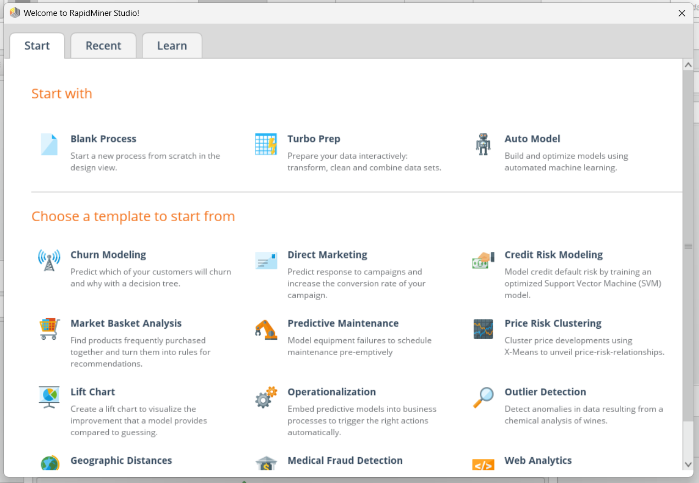
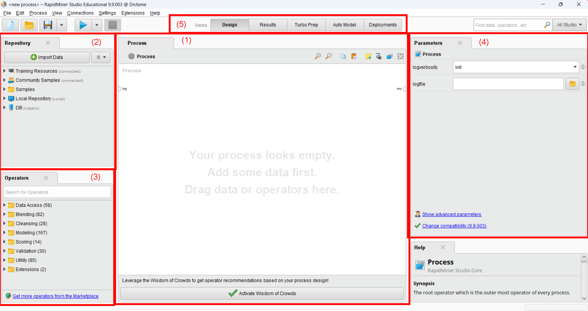
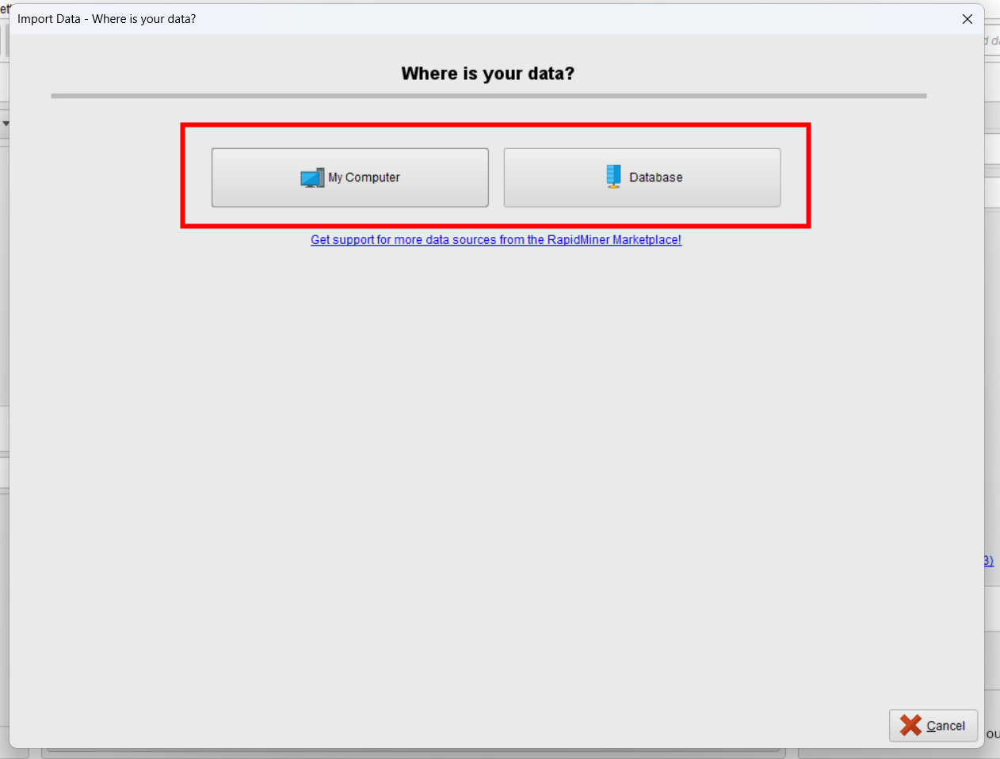
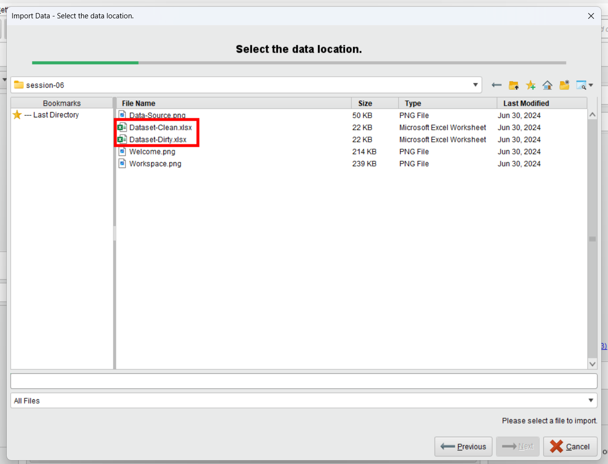
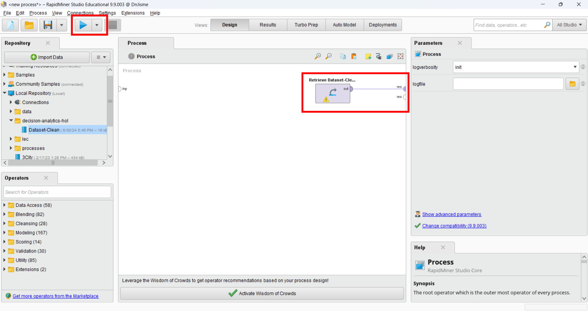

Introduction to Rapid Miner
Rapid Miner adalah program analisis data open-source yang digunakan untuk mengolah data, membangun model prediksi, dan membuat laporan analisis. Rapid Miner menyediakan berbagai algoritma analisis data, visualisasi data, dan integrasi dengan berbagai sumber data. Dengan Rapid Miner, kita dapat melakukan analisis data tanpa perlu menulis kode pemrograman.
Dalam tutorial ini, kita akan mempelajari dasar-dasar Rapid Miner dan bagaimana menggunakan program ini untuk analisis data.
Note
Untuk materi di session 6 dan 7, kita akan menggunakan dataset berikut: Dirty Dataset
Note
Pastikan anda telah mengaktifkan lisence Rapid Miner sebelum memulai tutorial ini. Jika belum, silakan kunjungi Rapid Miner Website untuk mendapatkan lisence gratis, berbayar, maupun versi education.
Getting Started
Saat pertama kali membuka Rapid Miner, kita akan disambut dengan tampilan awal yang terdiri dari beberapa panel. Panel-panel ini berisi informasi tentang proyek yang sedang dikerjakan, data yang digunakan, dan operasi yang tersedia.
Di sini, kita dapat memulai dengan memilih template yang sudah ada, maupun dari awal dengan membuat memilih “Blank Process”
{kind=link}
Setelah memilih template atau membuat proyek baru, kita akan dibawa ke tampilan utama Rapid Miner.
{kind=link}
Tampilan ini terdiri dari beberapa panel:
Process
Panel ini adalah tempat kita akan membuat dan mengatur proses analisis data. Semua proses akan disimulasikan dalam bentuk code-block yang bekerja secara berurutan. Hasil proses akan ditampilkan dalam panel Results dengan menghubungkan proses yang sudah dibuat ke node “res”.
Repository
Panel ini merupakan suatu tempat untuk menyimpan dataset maupun proses analisis data yang sudah dibuat. Kita dapat menyimpan proses yang sudah dibuat untuk digunakan kembali di masa depan.
Operators
Panel ini berisi berbagai operasi yang dapat digunakan dalam proses analisis data. Operasi ini dapat digunakan untuk memanipulasi data, membangun model prediksi, dan membuat laporan analisis. Untuk menggunakan suatu operator, kita dapat menarik operator tersebut ke dalam panel Process.
Parameters
Panel ini berisi parameter-parameter yang dapat diatur untuk setiap operator. Parameter ini digunakan untuk mengatur konfigurasi operasi yang akan dilakukan.
Views Tab
Tab ini digunakan mengubah jenis display dari tampilan workspace kita. Jika kita ingin mengatur bagaimana suatu data diolah, kita dapat menggunakan tab “Design”. Jika kita ingin melihat hasil dari proses yang sudah kita buat, kita dapat menggunakan tab “Results”. Dan lain-lainnya.
Import Data
Untuk memulai pemrosesan data, kita memerlukan suatu dataset yang akan diolah. Download dataset template yang sudah disediakan di atas, lalu import dataset tersebut ke dalam Rapid Miner. Di panel Repository, klik Import Data
Kemudian, kita akan memilih sumber dataset kita. Jika sumbernya dari database, klik Database. Jika data tersebut dalam bentuk file di device kita, klik Computer.
{kind=link}
Kemudian, navigasikan ke folder dimana dataset kita berada, lalu pilih dataset yang akan di-import. Klik Open untuk memulai import data.
{kind=link}
Kemudian, kita akan diminta untuk data apa yang ingin kita gunakan, format data, dan tempat kita akan menyimpan dataset tersebut. Jika pengaturannya sudah selesai, klik Finish.
{kind=link}
{kind=link}
{kind=link}
Jika sudah selesai, maka Dataset-Clean kita sudah siap digunakan. Klik and drag dataset tersebut ke dalam panel Process. Kemudian, hubungkan Dataset-Clean ke node “res” lalu tekan tombol Start (atau F11) untuk melihat data yang sudah kita import.
{kind=link}